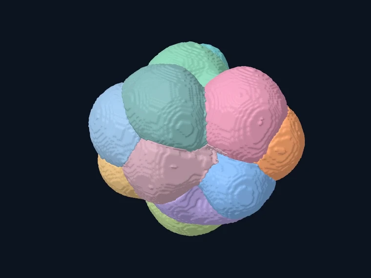

Scientific software · Immersive imaging
Fiji VR
A Fiji plugin for examining how structures are arranged in 3D and how they change over time, in the browser or in VR.
Quantitative biology
I’m Jonas Wagner, a systems biologist. I use imaging, machine learning, and multimodal data analysis to study how complex biological systems are organized and how they change.

01 Portfolio
Quantitative approaches to cell shape, gene expression, and microbial behavior, alongside tools for exploring the underlying data.
Scientific software · Immersive imaging
A Fiji plugin for examining how structures are arranged in 3D and how they change over time, in the browser or in VR.
Scientific software · 3D morphology
A macOS app for comparing cell shapes in 3D and checking those comparisons against the original microscopy.
Master’s thesis · Quantitative microscopy
A multimodal microscopy analysis of how barrier openings affect protist movement and bacterial prey in a soil-like chip.
Dewpoint Therapeutics · Industry research
I combined RNA sequencing and high-content microscopy to look for condensate-related drug targets in a cell model of type 2 diabetes.
02 About & résumé
I trained in systems biology at Heidelberg University. I’m interested in questions that take more than one kind of measurement to answer, from how cell morphology relates to gene expression to how spatial constraints shape microbial behavior.
Developed deep-learning workflows for segmenting soil protists in time-lapse microscopy.
Systems Biology major. Master’s research in the Van Gestel group.
Curated benchmark datasets for automated knowledge graph construction in BioCypher.
Exploratory biology intern. Integrated RNA sequencing and high-content microscopy with MOFA2 for multimodal condensate profiling.
Research associate. Prototyped knowledge graphs that combined multi-omics and high-throughput screening data to help prioritize drug discovery targets. Integrated deep-learning segmentation into condensate imaging workflows.